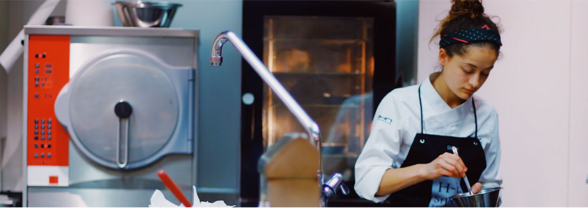
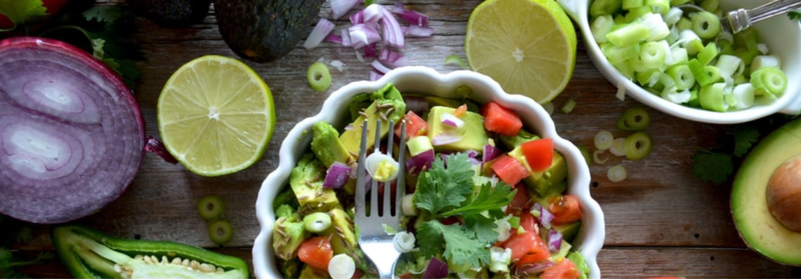
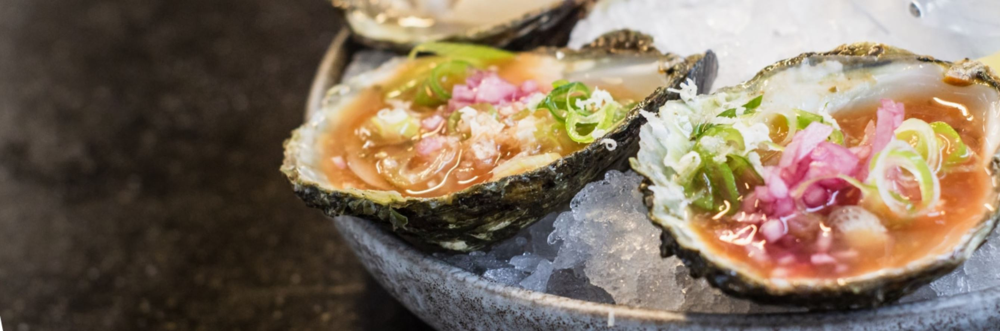

Cooking runs deep in the Day family. Our founder, Lucinda Day who grew up farming in the middle of Nowhere, says the money she saved to put herself through college was covered in fresh herbs.

The Day family moved to the Bay in the early 1970's and started a small homestead farm. Following that, they leased up to 400 acres across the county to grow sweet corn, mums, pumpkins, and vegetables for the original family farm market, Fruit of the Nowhere.

Pines of Nowhere was established in 2007 when the first grape vines came into full production and now grows over ten varietals of grapes including Viognier, Norton, and Cabernet Franc
